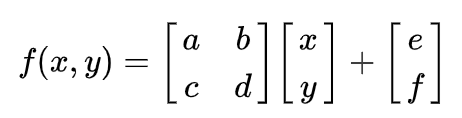

Ok, I’ve never suspected I would love this so much ahah ! But once you enter the world of fractals… you’ll always want more.
My first playground is a fractal that looks like a leaf. Not any leaf, a fern leaf. This comes from Michael Barnsley work upon fractals. It demonstrate an example of an iterated function system. A fractal is the union of several copies of a geometric model, each being transformed by a function. Usually represented on 3 dimensions, they are often computed and drawn in 2D. The canonical example is the Sierpiński triangle.
Barnsley’s fern uses 4 affine transformations.

| w | a | b | c | d | e | f | p | Portion generated |
| ƒ1 | 0 | 0 | 0 | 0.16 | 0 | 0 | 0.01 | Stem |
| ƒ2 | 0.85 | 0.04 | −0.04 | 0.85 | 0 | 1.60 | 0.85 | Successively smaller leaflets |
| ƒ3 | 0.20 | −0.26 | 0.23 | 0.22 | 0 | 1.60 | 0.07 | Largest left-hand leaflet |
| ƒ4 | −0.15 | 0.28 | 0.26 | 0.24 | 0 | 0.44 | 0.07 | Largest right-hand leaflet |
This table up here is not immutable, try to tweek it’s values and see what happens :)
Anyway, to begin with, I need to draw. and to draw I can use a canvas.
<!doctype html>
<html>
<head>
<meta charset="utf-8">
<meta name="description" content="Barnsley's fern">
<meta name="viewport" content="width=device-width, initial-scale=1">
<title>Barnsley's fern</title>
</head>
<body>
<canvas id="fern" width="600" height="600"></canvas>
</body>
</html>Now, I need to write a bit of javascript code. First, in a script tag, while getting the canvas element, I define the context as a 2D one, we won’t deal with 3D today. And I grab it’s dimensions.
<script type="text/javascript">
const canvas = document.getElementById('fern');
const canvasWidth = canvas.width;
const canvasHeight = canvas.height;
const ctx = canvas.getContext("2d");
</script>Let define the starting points and position.
// ...
let pointX = 0;
let pointY = 0;
let x = 0;
let y = 0;For a defined serie, I’ll draw a point, a dot, and between each iteration, I’ll copy it’s values, then transform it according to the function and the given values in the table up above. Let’s say I’ll draw 150’000 dots.
// ...
let c = 0
while (++c < 150000) {
drawPoint();
nextPoint();
}Let’s code the drawPoint function. I’ll use the fillRect method to depict and draw the point in the canvas.
// ...
function drawPoint () {
ctx.fillRect(px,py,1,1);
}Let’s see the nextPoint method. This is the method that will implement the maths. This is the method you’ll want to tweak.
function nextPoint() {
let r = Math.random();
if ( r < 0.01) {
pointX = 0;
pointY = 0.16 * y;
} else if ( r < 0.86) {
pointX = 0.85 * x + 0.04 * y;
pointY = -0.04 * x + 0.85 * y + 1.6;
} else if ( r < 0.93) {
pointX = 0.20 * x + -0.26 * y;
pointY = 0.23 * x + 0.22 * y + 1.6;
} else {
pointX = -0.15 * x + 0.28 * y;
pointY = 0.26 * x + 0.24 * y + 0.44;
}
x = pointX;
y = pointY;
}We could be done. But unfortunately, I need to make my point to be visible and proportionnaly dispatch within my canvas. If I stop here, I won’t see anything but disappointment. To map the point with the canvas I’ll create a map method. And because I don’t care I’ll use a prototype x) and update the draw function accordingly.
// ...
Number.prototype.map = function (in_min, in_max, out_min, out_max) {
return (this - in_min) * (out_max - out_min) / (in_max - in_min) + out_min;
}
function drawPoint () {
let px = x.map(-2.1820, 2.6558, 0, canvasWidth);
let py = y.map(0, 9.9983, canvasHeight, 0);
ctx.fillRect(px,py,1,1);
}Isn’t that cool ?? ahah :D Try some mutations and see what happens :)
The code is available here.